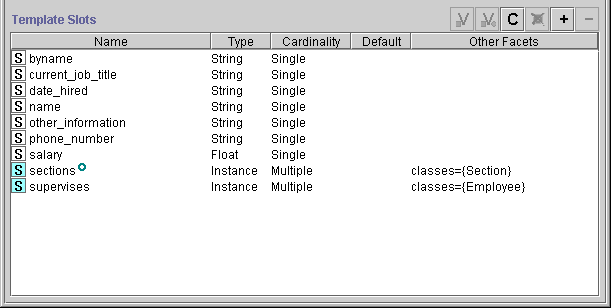

The Template Slot buttons,


 , located at the top right of the Template
Slots pane, allow you to view and edit, create, or add, or remove a slot for the
current class.
, located at the top right of the Template
Slots pane, allow you to view and edit, create, or add, or remove a slot for the
current class.

You can also view, create, and delete slots, as well as view back-references, directly from the Slots Tab. See the Slot Buttons for more information.
The buttons have the following actions:
| V(iew) Top-Level Slot button: Click this button to open the top-level Slot Form for the highlighted slot. If you make any overrides to the slot at the top level, they affect the slot everywhere it appears, including the Slots Tab and any classes where the slot is attached. See Viewing a Slot. | |
| |
V(iew) Slot at Class button: Click this button to open the class-level Slot Form for the highlighted slot. If you make any overrides to the slot at the class level, they only affect the slot at the class and any subclasses. The slot remains unchanged at the Slots Tab and any unrelated classes where appears. A slot that has been overridden has an override icon in the left column. There are limits on the overrides that you can make to an inherited slot. See Viewing a Slot for more information. |
| C(reate)
button: Click this button to create a new slot for the current class. See Creating a
Slot. If the Create |
|
| Clear Slot Overrides button: Click this button to remove any slot overrides. See Clearing Overrides From a Slot for more information. | |
| Add button: Click this button to add a pre-existing slot to the current class. See Adding a Slot. | |
| Remove button: Click this button to
remove the highlighted slot from the current class. The slot remains in
the project and can be viewed via the Slots Tab. If the Remove |
Next: The Back-References Pane